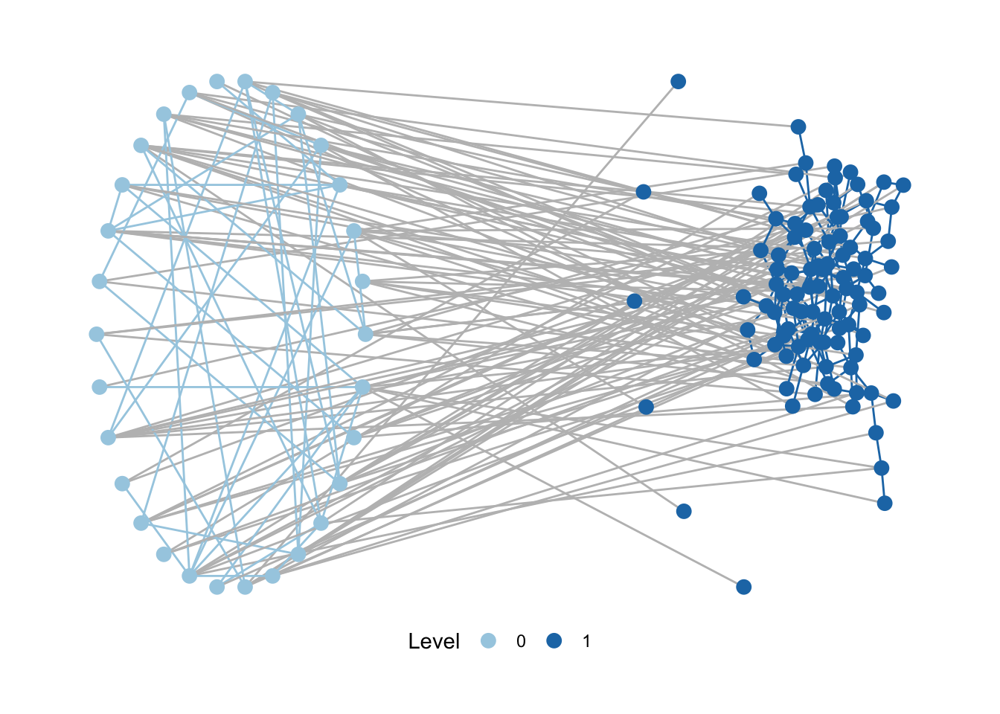
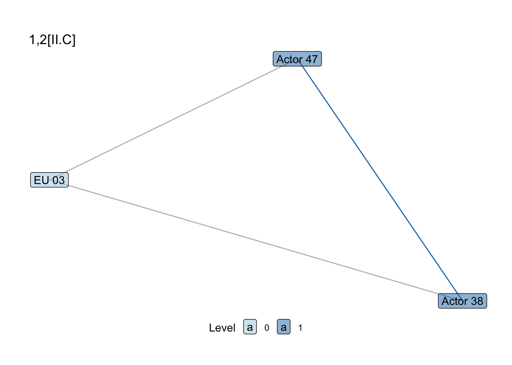
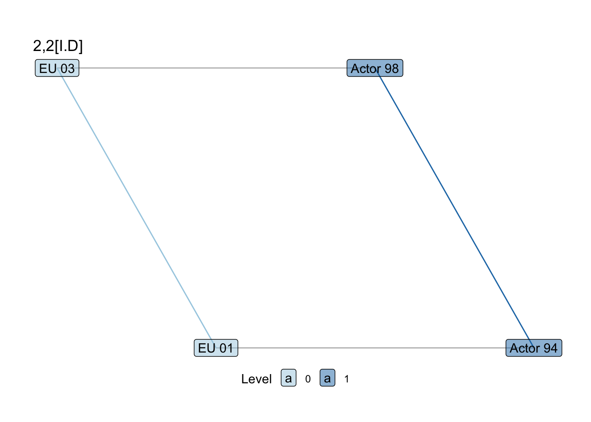
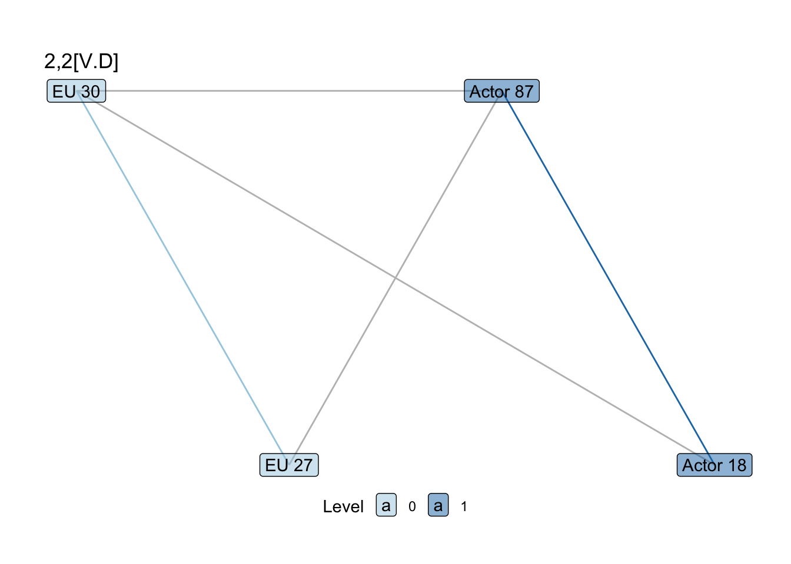
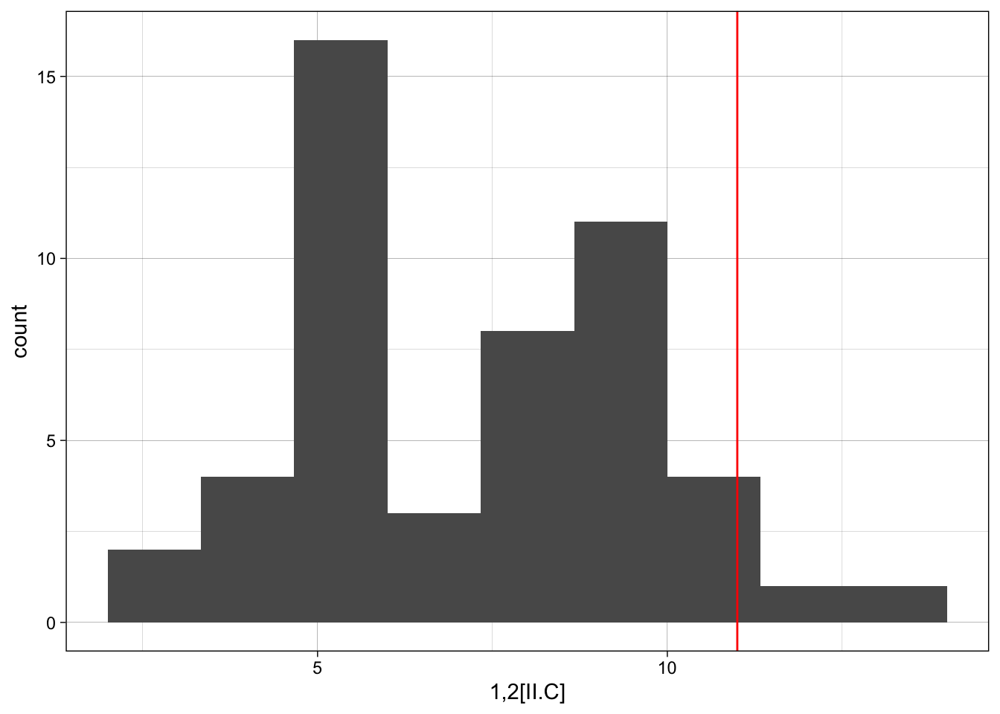
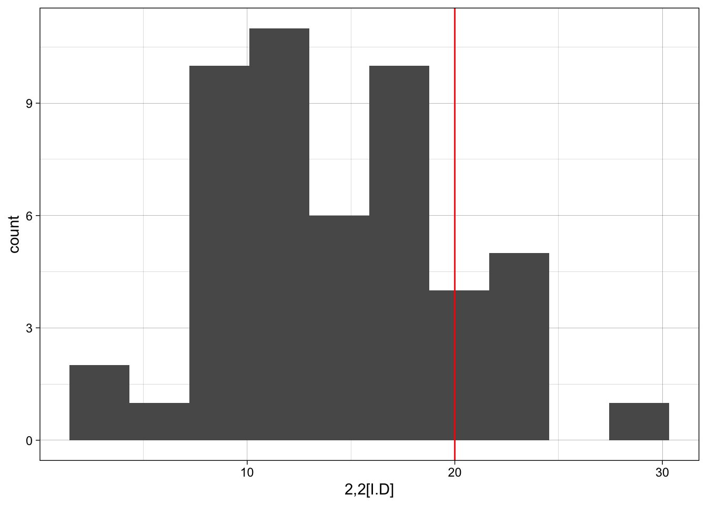
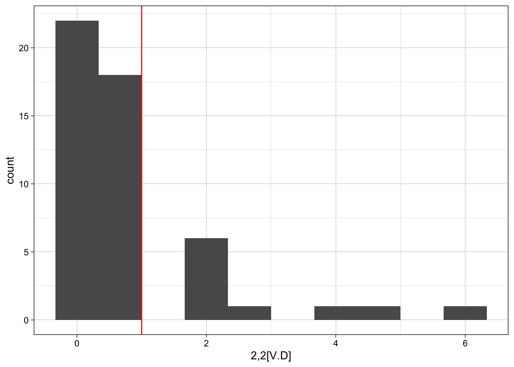
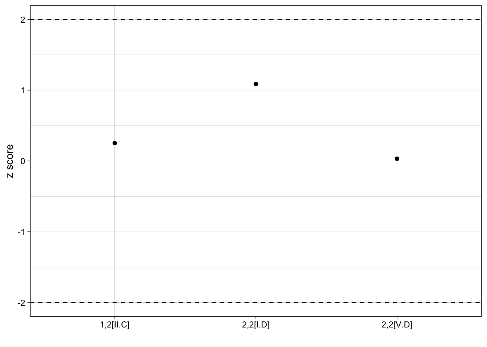
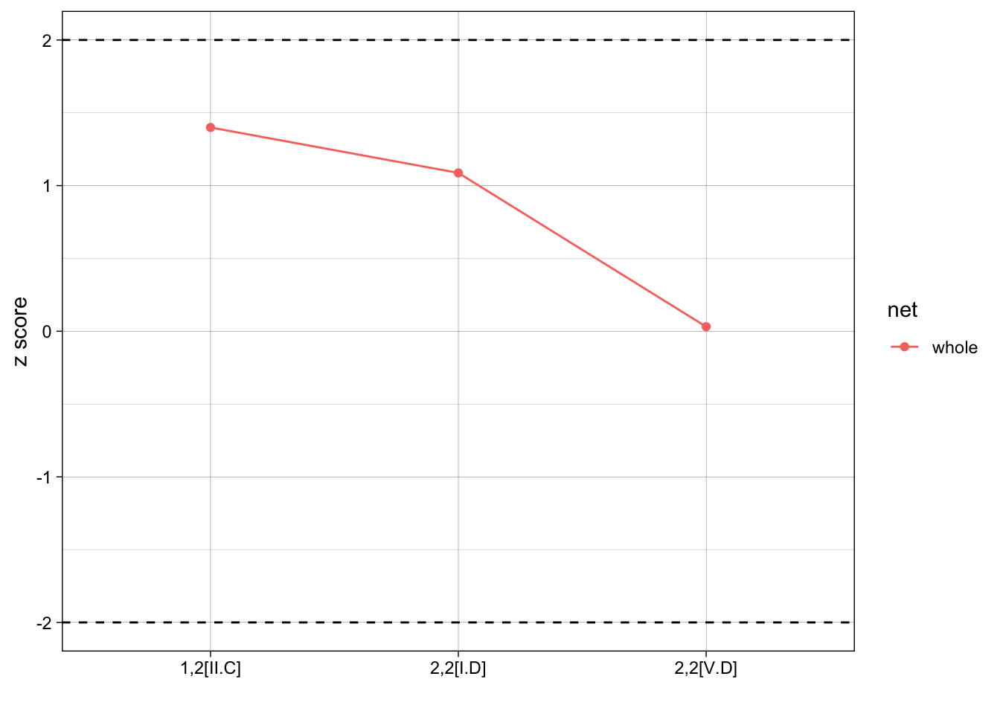

library(igraph)
library(network)
library(motifr)
library(statnet)
library(ggplot2)Social-ecological networks with motifR: Organizing and analyzing data
This post briefly covers how to go about organizing data for social-ecological network (SEN) analysis and running some of the main functions in Angst & Seppelt’s motifR (2020).
First, lets’ load in all of the packages we’ll need. (Note: We use both igraph and network, which can conflict with one another, though not in this the code shared with this post).
Simulate data
First, we’ll simulate some data to use. The basic premise is that we need three networks:
- Social network: A one-mode network with ties that link actors. We’ll think of these as social-to-social (SS) ties, and the associated attributes will be only for the social actors.
- Ecological network: A one-mode network with ties that link ‘ecological units’. Ecological units will vary based on the system being studied, and we’ll just leave them generic. But these will be ecological-to-ecological (EE) ties, where ties represent ecological interdependence, and the associated attributes will be only for the ecological units, if relevant.
- Social-ecological network: A two-mode network with ties that link social actors to ecological units (SE). These are usually about the management or interaction of social actors on/with the different ecological units.
The code for simulating these data are below. While generic, they give a sense of the shape of the data for each network.
set.seed(12)
## Create social and ecological nodes, and organize with leading zero
## otherwise ordering will be annoying later
S_nodes <- data.frame('name' = 1:99,
'type' = sample(paste("Type", LETTERS[1:3]),
99, replace = T))
S_nodes$name <- ifelse(nchar(S_nodes$name) == 1,
paste0('Actor ', 0, S_nodes$name),
paste('Actor', S_nodes$name))
E_nodes <- data.frame('name' = 1:30,
'type' = 'Ecol Unit')
E_nodes$name <- ifelse(nchar(E_nodes$name) == 1,
paste0('EU ', 0, E_nodes$name),
paste('EU', E_nodes$name))
## Create social-social, ecological-ecological, and social-ecological edges;
## making sure to get rid of duplicates
SS_edges <- data.frame(from = sample(S_nodes$name, 150, replace = T),
to = sample(S_nodes$name, 150, replace = T))
SS_edges <- SS_edges[!duplicated(SS_edges),]
EE_edges <- data.frame(from = sample(E_nodes$name, 40, replace = T),
to = sample(E_nodes$name, 40, replace = T))
EE_edges <- EE_edges[!duplicated(EE_edges),]
SE_edges <- data.frame(from = c(S_nodes$name,
sample(S_nodes$name, 20, replace = T)),
to = sample(E_nodes$name,
(nrow(S_nodes)+20), replace = T))
SE_edges <- SE_edges[!duplicated(SE_edges),]
## Create networks
SS_net <- igraph::graph_from_data_frame(SS_edges,
vertices = S_nodes, directed = F)
EE_net <- igraph::graph_from_data_frame(EE_edges,
vertices = E_nodes, directed = F)
SE_net <- igraph::graph_from_data_frame(SE_edges, directed = F)Based on these three networks, we need four matrices. These include:
- SS matrix: adjacency (square) matrix of social-social ties
- EE matrix: adjacency (square) matrix of ecological-ecological ties
- SE matrix with social rows: incidence (rectangular) matrix of social-ecological ties, where actors are the rows
- SE matrix with ecological rows: incidence (rectangular) matrix of social-ecological ties, where ecological units are the rows
## Both the SS and EE networks are one-mode, adjacency matrices
## sort for matching node attributes later
SS_matrix <- as.matrix(igraph::as_adjacency_matrix(SS_net))
SS_matrix <- SS_matrix[order(rownames(SS_matrix)), order(colnames(SS_matrix))]
EE_matrix <- as.matrix(igraph::as_adjacency_matrix(EE_net))
EE_matrix <- EE_matrix[order(rownames(EE_matrix)), order(colnames(EE_matrix))]
## Typically the SE network should be two-mode, but for the simulating data we
## quickly made it one-mode (easier) and now will manually reduce the matrix
## If you are working with a network that is two-mode already,
## use get_incidence_matrix()
SE_matrix <- as.matrix(igraph::as_adjacency_matrix(SE_net))
## Use next line only if one-mode, rather than two mode
SE_matrix_Srow <- SE_matrix[1:nrow(S_nodes), (nrow(S_nodes)+1):ncol(SE_matrix)]
SE_matrix_Srow <- SE_matrix_Srow[order(rownames(SE_matrix_Srow)), order(colnames(SE_matrix_Srow))]
SE_matrix_Erow <- t(SE_matrix_Srow)We can check out these four matrices.
dim(SS_matrix) # All actors x all actors[1] 99 99dim(EE_matrix) # All ecological units x all ecological units[1] 30 30dim(SE_matrix_Srow) # All actors x all ecological units[1] 99 30dim(SE_matrix_Erow) # All ecological units x all actors [1] 30 99Merge matrices
Once we have our four matrices, we do a series of merges. We merge the social matrix to the SE matrix with social rows. Then we merge the ecological matrix to the SE matrix with ecological rows.
## Join S and SE for 'top' part of SEN (SS + SE networks)
## In this case, both should have actors as rownames (Srow)
SEN_S_matrix <- merge(SS_matrix, SE_matrix_Srow, by = "row.names", all = TRUE)
SEN_E_matrix <- merge(SE_matrix_Erow, EE_matrix, by = "row.names", all = TRUE)These two matrices should have the same number of columns with their names in the same order, which allows then to just bind them on top of one another.
## Check that they are the same
table(colnames(SEN_S_matrix) == colnames(SEN_E_matrix))
TRUE
130 ## Combine both and reset
SEN_matrix <- rbind(SEN_S_matrix, SEN_E_matrix)
rownames(SEN_matrix) <- SEN_matrix[,1]
SEN_matrix <- SEN_matrix[,-1]
# Return to a matrix (rbind has turned it to a data frame)
SEN_matrix <- as.matrix(SEN_matrix)Create full SEN
Now we can build a single network that is our full, multi-level social-ecological network (SEN). We’ll first bind together the social and ecological node attributes, and create a new attribute ‘sesType’, which will be important for specifying levels in motifR.
## Bind node attributes (need same columns) and add a 'sesType' attribute
## that motifR wants to see: ecological = 0, social = 1 (can add more if more
## levels are there)
SE_nodes <- rbind(S_nodes, E_nodes)
SE_nodes$sesType <- ifelse(SE_nodes$type == "Ecol Unit", 0, 1)Then we will create the network itself using the network package. One reason we have been ordering the row and column names (alphabetically) has been to ensure that the network is built with the nodes in the order that matches the node list. Double check this, as this will make sure you that your node attributes align to our nodes correctly.
SEN_net <- network(SEN_matrix,
vertex.attr = SE_nodes, directed = FALSE) motifR
Now, that things are set up, is time for working with motifR. First, check that the package is working will with python by just plotting your network.
plot_mnet(
net = SEN_net,
lvl_attr = "sesType",
layouts = list("circle", "kk"), # the layouts for the levels
directed = FALSE
)
Note: reticulate
motifR relies on the reticulate package in R to run over python. reticulate is great but can be annoying if python is installed in several places or you you have path issues. This may not be necessary, but if you run into issues, one thing to do is to check your environment and make sure that your path is to python on your computer.
# Check out your system environment here
Sys.getenv()
# you want to see something like: RETICULATE_PYTHON_FALLBACK = /Users/[[NAME]]/anaconda3/bin/python3
## If it is not, you can set this yourself, eg below
Sys.setenv(RETICULATE_PYTHON_FALLBACK = '/Users/[[NAME]]/anaconda3/bin/python3')Motifs
Assuming reticulate isn’t creating any issues, we can look at the different motifs available in the motifR package and their names. The code below will open a new window that allows you to select through different motifs and see them visually. If you cannot see them, trying making your pop-out window larger.
explore_motifs() # opens interactive windowAnd then we can also see these motifs in our own network.
show_motif("1,2[II.C]", net = SEN_net, directed = FALSE, label = TRUE) +
labs(title = "1,2[II.C]")
show_motif("2,2[I.D]", net = SEN_net, directed = FALSE, label = TRUE) +
labs(title = "2,2[I.D]")
show_motif("2,2[V.D]", net = SEN_net, directed = FALSE, label = TRUE) +
labs(title = "2,2[V.D]")


And then use the count_motifs function to look at the counts of different motifs.
## It may be easier just to make a list of the motifs you are interested in
## because you will reference these often
motifs_of_interest <- list("1,2[II.C]", "2,2[I.D]", "2,2[V.D]")
count_motifs(SEN_net, lvl_attr = "sesType",
motifs = motifs_of_interest,
directed = FALSE)Processing 1,2 motifs
[ Classifying 301 gadgets ................................................... ]
[ ########################################################################### ]
Processing 2,2 motifs
[ Classifying 301 gadgets ................................................... ]
[ ########################################################################### ] motif count
1,2[II.C] 1,2[II.C] 8
2,2[I.D] 2,2[I.D] 20
2,2[V.D] 2,2[V.D] 1Simulate networks, Erdos-Renyi model
Once we have the counts of the network motifs, we want to know whether or not these motifs are observed more or less than would be expected, given a baseline model. We can use the simulate_baseline function to do this.
The baseline model against which we compare can vary. One simple baseline is a random, Erdos-Renyi graph. We’ll start with this as an example to see how the function works.
n_iter <- 50 # number of iterations: low for example but recommended >1000
sim_random <- simulate_baseline(net = SEN_net,
motifs = motifs_of_interest,
n = n_iter,
lvl_attr = "sesType",
model = "erdos_renyi" # default
)The result is a data frame with the counts of each motif for however many simulated graphs there are.
head(sim_random) 1,2[II.C] 2,2[I.D] 2,2[V.D]
1 7 24 2
2 7 16 0
3 9 7 0
4 11 18 4
5 13 24 3
6 9 26 1Simulate networks, ERGM
Now that we understand simulate_baseline, we can use a more complex baseline model. Rather than use a random graph, which most graphs are likely to be significantly different from, we can simulate networks using Exponential Random Graph Models (ERGMs).
For SENs, however, we need to think about what kind of ERGM makes sense as baseline. Sometimes, ecological networks are ‘fixed’, meaning that ecological relationships are not a matter of choice. In an example, the interdependence between hydrological areas are fairly fixed (barring engineering) because water flows are dependent on the geomorphology of a place. In these scenarios, we can estimate a ‘partial’ ERGM, using only the social level, given that this is the only level really able to change.
To do this, we make a subgraph of our SEN to include just the social actors, and specify an ERGM.
## So we can create a subgraph of just the social level
actor_net <- motifr::induced_level_subgraph(SEN_net,
level = 1,
lvl_attr = "sesType")
### And then specify an ergm for the actors
actor_ergm <- ergm(actor_net ~ density +
nodematch("type", diff=TRUE) +
nodefactor("type") +
gwdegree(.5, fixed = TRUE) +
gwesp(.25, fixed=TRUE))Then we use this partial ERGM as the baseline model for our simulations.
## Now, instead of model = erdos renyi, model = 'partial-ergm',
## specify what level the ergm is partial for, and the ergm itself
sim_ergm_p <- simulate_baseline(SEN_net,
motifs_of_interest,
n = n_iter,
lvl_attr = "sesType",
model = "partial_ergm",
level = 1,
ergm_model = actor_ergm
)In a case where ecological nodes are not fixed (e.g. foraging behavior), we can also run and set a full ERGM as your baseline.
se_ergm <- ergm(SEN_net ~ edges +
nodefactor("sesType") +
gwdegree(.5, fixed = TRUE) +
gwesp(.25, fixed=TRUE))sim_ergm <- simulate_baseline(SEN_net,
motifs_of_interest,
n = n_iter,
lvl_attr = "sesType",
model = "ergm",
ergm_model = se_ergm
)Plotting distributions
Whichever baseline you set, it is then useful to view the observed motif count to the distribution of the motif counts from the simulated networks. First, in a single example, we can take a look.
motif_counts <- count_motifs(SEN_net, lvl_attr = c("sesType"),
motifs = motifs_of_interest,
directed = FALSE)Processing 1,2 motifs
[ Classifying 301 gadgets ................................................... ]
[ ########################################################################### ]
Processing 2,2 motifs
[ Classifying 301 gadgets ................................................... ]
[ ########################################################################### ]ggplot(sim_ergm, aes(x = sim_ergm[,1])) +
geom_histogram(bins = 10) +
geom_vline(xintercept = motif_counts$count[1], colour="red") +
labs(x = motif_counts$motif[1]) +
theme_linedraw()
However, it may be easier just to iterate across each motif using something like the loop below.
for(i in 1:nrow(motif_counts)){
p <- ggplot(sim_ergm, aes(x = sim_ergm[,i])) +
geom_histogram(bins = 10) +
geom_vline(xintercept = motif_counts$count[i], colour="red") +
labs(x = motif_counts$motif[i]) +
theme_linedraw()
print(p)
}

z-scores for observed versus simulated motif counts
To determine whether or not there is a statistically significant difference between the observed and simulated motif counts, we can calculate a z-score.
Again, we could do this one-by-one for each motif of interest:
## Observed motif n
motif_count <- as.numeric(motif_counts$count[1])
## Simulated motif n: mean and sd
mean_motif_sim <- mean(sim_ergm[,1])
sd_motif_sim <- sd(sim_ergm[,1])
zscore <- (motif_count-mean_motif_sim)/sd_motif_sim
zscore[1] 0.2523347This z-score is very close to zero, which makes sense: our networks were randomly generated and so we wouldn’t expected them to be statsitically different from other randomly generated networks.
Now, both for expediency and for organizing results more readily for tables and figures, we can iterate across the different motifs to make a results table.
results <- data.frame()
for(i in 1:length(motifs_of_interest)){
## Repeating this function but could link back to earlier object
motif_count <- count_motifs(SEN_net, lvl_attr = c("sesType"),
motifs = motifs_of_interest[[i]])
motif_count$mean_motif_sim <- mean(sim_ergm[,i])
motif_count$sd_motif_sim <- sd(sim_ergm[,i])
motif_count$zscore <- (motif_count$count- motif_count$mean_motif_sim) /
motif_count$sd_motif_sim
results <- rbind(results, motif_count)
}Processing 1,2 motifs
[ Classifying 301 gadgets ................................................... ]
[ ########################################################################### ]
Processing 2,2 motifs
[ Classifying 301 gadgets ................................................... ]
[ ########################################################################### ]
Processing 2,2 motifs
[ Classifying 301 gadgets ................................................... ]
[ ########################################################################### ]head(results) motif count mean_motif_sim sd_motif_sim zscore
1,2[II.C] 1,2[II.C] 8 7.34 2.615573 0.25233472
2,2[I.D] 2,2[I.D] 20 14.26 5.279185 1.08728901
2,2[V.D] 2,2[V.D] 1 0.96 1.292995 0.03093592Plotting results
Last, we’d like to put our results into one single graph so that we can compare z-scores of each motif. We can identify important cutpoints, such as z scores +/- 2, to help identify when a different may be singificant.
With our randomly generate network, all of our results not statistically significant, it isn’t very interesting, but the point is to share the plot code:
ggplot(results, aes(x = motif, y = zscore)) +
geom_point() +
geom_hline(yintercept=c(2, -2), linetype = "dashed") +
labs(x = "", y = "z score") +
theme_linedraw()
And if we were to expand this analysis to compare motifs across different networks, we could add grouping and coloring to help compare. For example:
results$net <- "whole"
ggplot(results, aes(x = motif, y = zscore, group = net, color = net)) +
geom_point() +
stat_summary(geom="line") +
geom_hline(yintercept=c(2, -2), linetype = "dashed") +
labs(x = "", y = "z score") +
theme_linedraw()